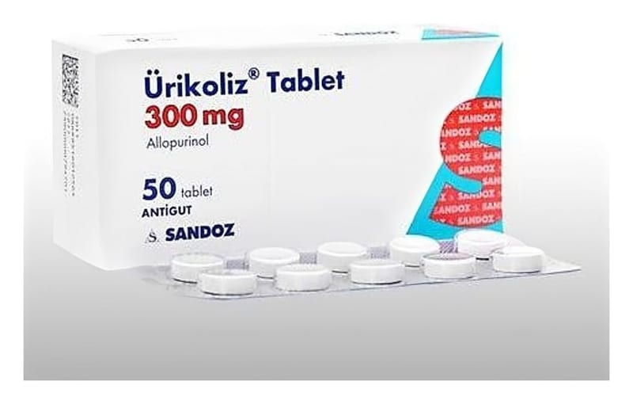

Ürikoliz 300 mg Tablet, 50 Adet

Ne için kullanılır
KT · Bölüm 1ÜRİKOLİZ, antigut ilaçlar grubundan bir etkin madde olan allopurinol içerir. Kan ve idrardaki ürik asit olarak adlandırılan bir maddenin seviyesini azaltmak için vücudunuzdaki bir takım tepkimeleri yavaşlatarak etki gösterir.
ÜRİKOLİZ, 300 mg allopurinol içeren 50 veya 100 tablet halinde kullanıma sunulmuştur.
• ÜRİKOLİZ, vücudunuzun ürik asit isimli maddeyi çok fazla ürettiği durumlarda ürat/ürik asit birikimini azaltmak ya da oluşumunu engellemek için kullanılabilir. Bu durumlar, gut hastalığı, böbrek taşı ve böbrek problemlerinde olabilir ya da kanser veya başka bir rahatsızlığın tedavisi sırasında görülebilir. Gut hastalığında, ürik asit, eklemlerde ve tendonlarda kristal olarak birikerek iltihaba neden olur. Bu iltihaplanma eklem çevresindeki dokuda şişliğe ve hafif bir dokunmayla dahi acı veren hassasiyete sebebiyet verir. Eklemler hareket ettirildiğinde ise şiddetli ağrıya neden olur.